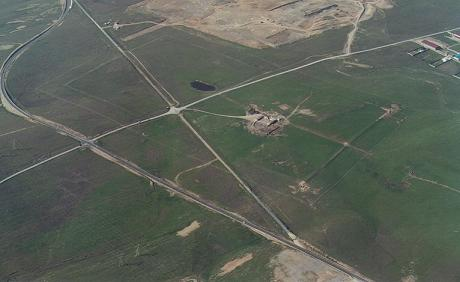
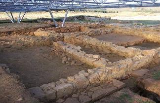
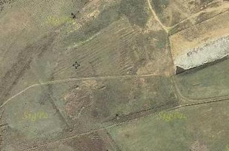

|
PETAVONIUM
Las localidades de San Pedro de la Viña,
Rosinos de Vidriales y Santibañez de Vidriales conforman un triangulo en
cuyo centro se localiza el campamento romano de Petavonium. Esta zona en la
cabecera del arroyo Almucera, se identifica con la mansio de Petavonium. El
solar que alberga las ruinas del campamento militar romano, se conoce
popularmente como Sansueña, y esta localizado en el término municipal de
Rosinos de Vidriales. AQUAE QUERQUENNAE VIA NOVA El yacimiento arqueológico de "Aquis Querquennis", agua entre robles; es la tercera villa situada en la Vía XVIII del Itinerario de Antonino. Ver video
De época flavia, aquí permaneció la
Cohor II de la Legio VII Gemina. Construido del 69-79, abandonado hacia el
120, era una guarnición mixta (infantería y caballería). En las inmediaciones del campamento se encuentra la mansión- viaria. La tercera desde Braga. Y la zona termal. El embalse anegó entre otros a
Ponte das Poldras que en raras ocasiones todavía se puede ver. Ver Galicia romana
CAMPAMENTO ROMANO DE CÁCERES EL VIEJO
 CAMPAMENTO ROMANO DEL CINCHO El Campamento romano del Cincho, Cantabria es de época alto imperial. El yacimiento fue descubierto a finales del siglo XX por M. García Alonso, quien ha realizado excavaciones en el mismo. Se han recuperado algunos materiales arqueológicos, monedas, armas, etc. El campamento esta situado en la cima de una colina, de planta rectangular con unos 152.000 metros cuadrados, perimetrado por un muro (agger) y un foso (fossa). En el amurallamiento externo hay varias puertas en clavícula (claviculae). El interior del recinto está dividido por un amurallamiento con foso. CAMPAMENTO ROMANO DE CIDADELA El Campamento Romano de Ciudadela se localiza en el municipio de Sobrado Dos Monxes, La Coruña. Recinto de forma rectangular con las esquinas redondeadas y en el se asentaba una corte de 500 hombres, que se mantuvo desde el siglo II hasta el siglo IV. Se sabe que los legionarios eran militares de la II Cohorte de Roma con base en la Vía Lucus Augusta, de especial importancia por ser el destacamento militar de Brigantium, el actual Betanzos. Estaba dedicado a controlaba las mercancías que iban a A Coruña y Lugo. 200 años más tarde fue recuperado por una población germánica. El sistema defensivo está formado por una muralla que lo rodea todo recinto y un foso. Además tenía dos túmulos megalíticos que eran utilizados como puestos de vigilancia. El yacimiento está excavado y algunas partes consolidadas. Los restos mejor conservados son el pretorio y tramos de la muralla. Es el campamento romano más extenso de los excavados en Galicia, y en el se encontraron monedas, lápidas, vasijas y otras piezas romanas.
 CAMPAMENTO ROMANO DE EL PEDROSILLO En Casas de Reina, en su término municipal se localiza uno de los campamentos militares romanos mejor conservados de todo el imperio. El campamento de El Pedrosillo, un complejo militar romano de época republicana. Pudo ser utilizado en el período de las guerras lusitanas. Un auténtico complejo militar romano. Está formado por toda una red de recintos, fortines y otras instalaciones esparcidas, de forma estratégica, con una extensión de unas 350 hectáreas. CAMPAMENTO ROMANO DE ALMAZAN Almazan, Soria. Los restos hallados atestiguan presencia en la zona desde la prehistoria, pasando por la época celtibérica, hasta los romanos cuando se construyó un campamento romano atribuido al cónsul Nobilior en el año 153-153 a.e.c., de notable importancia durante los años de asedio a Numancia, al ser lugar de paso entre Ocilis y la propia Numancia.
 CAMPAMENTO ROMANO DE ESPARRAGALEJO
CASTELLUM TOSSAL DE LA CALA DE BENIDORM En julio de 2013, en El Tossal de la Cala, localizó una muralla romana que data del siglo I a.e.c., es "una de las más antiguas" de las encontradas hasta ahora en "el sureste de la Hispania romana". Este hallazgo corrobora que el yacimiento es un 'castellum' o fortín romano y no un poblado íbero como se había creído hasta ahora. Según los arqueólogos este 'castellum' formaba parte de la red defensiva planificada por Sertorio con motivo de las guerras civiles romanas y que incluye los fortines de Cap Negret (Altea), Penyal (Calpe), Portet (Moraira) y del Montgó. La muralla militar contaría con un metro de grosor de
mampostería y a los pies de ésta se levantaban las 27 viviendas excavadas en
décadas anteriores y que conectaban con la parte superior del recinto a
través de escaleras.
CAMPAMENTO ROMANO DE CASTELLONET DE LA CONQUESTA Castellonet de la Conquesta se localiza en Valencia. En la entrada al pueblo se puede apreciar un arco romano que se asocia a una pequeña fortaleza de época romana. También se ha hallado un poblado ibérico, en el final de la senda del Tossal, excavado solo superficialmente.
|